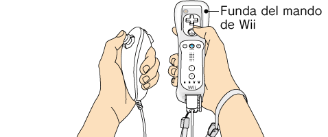

3 |
Preparación del mando |
 |
La manera de sujetar el mando dependerá de si vas a usar solo el mando de Wii o de si lo harás usando también un mando complementario.

Wii Zapper con el Nunchuk acoplado
Nota: Consulta siempre el manual de instrucciones del mando que vayas a usar.


Nota: Si el cierre de tu correa tiene un seguro, bájalo hasta que oigas un clic. Así evitarás que se suelte la correa.
Este procedimiento te permitirá establecer la comunicación entre el mando y la consola.
Existen dos métodos para sincronizar un mando con la consola:
Modo normal - El modo normal de sincronización se utiliza para conectar mandos adicionales a la consola o para volver a sincronizar el mando incluido con la consola Wii. Una vez sincronizado, el mando permanecerá conectado a la consola a menos que sobrescribas dicho ajuste al sincronizar el mando con otra consola diferente.
Modo único - Este modo te permitirá usar el mando de Wii temporalmente con la consola de un amigo, así como que tus amigos puedan usar sus mandos con tu consola. No sobrescribirá el ajuste del modo normal guardado en el mando de Wii. En este modo, el mando solo se comunicará con la nueva consola mientras esté encendida. Al apagarla, el mando dejará de estar sincronizado con la consola.
Nota: Tan solo un mando de Wii sincronizado en el modo normal puede encender o apagar la consola.
Nota: Asegúrate de que el mando de Wii tiene pilas.
Sincronización en modo normal

Se debe seguir este procedimiento con cada mando de Wii adicional que conectes a la consola.
Sincronización en modo único
Nota: Este modo desactiva de forma temporal el ajuste de sincronización del modo normal para todos los mandos de Wii hasta que se apaga la consola Wii. Cuando se vuelva a encender la consola, se restaurará la configuración del modo normal.


IMPORTANTE:
- Si el mando de Wii pierde la sincronización con la consola y no puedes volver a sincronizarlo, consulta la sección "6. Cómo sincronizar el mando de Wii con la consola Wii" del manual de instalación de la consola Wii. - No mantengas pulsado
Si se mantiene inclinada una palanca o se mantiene pulsado un botón del mando clásico, del mando de Nintendo GameCube o del Nunchuk (véase más abajo) al encender la consola, al conectarse al mando de Wii, al entrar en algún canal del menú de Wii o al volver al menú de Wii desde algún juego o canal, esa posición pasará a ser su nueva posición neutra, lo que podría causar problemas de control durante la partida. Para restablecer la posición neutra original, haz lo siguiente:
La posición neutra de una palanca de control o botón es aquella en la que la palanca no está inclinada y no se está pulsando ningún botón.
|
 en el mando de Wii que esté sincronizado con la consola.
en el mando de Wii que esté sincronizado con la consola.
 en el mando de Wii que quieras sincronizar con la consola. El orden en que sincronices los mandos de Wii determinará el orden de los jugadores en las partidas multijugador.
en el mando de Wii que quieras sincronizar con la consola. El orden en que sincronices los mandos de Wii determinará el orden de los jugadores en las partidas multijugador.
 ,
,  ,
,  y
y  en el mando de Wii durante tres segundos.
en el mando de Wii durante tres segundos.
 |
 |
 |